Isha Life Account
The part of an online store people use most after they buy: their account home, orders, returns, subscriptions, wish list, reviews and the size guide that decides what they buy next. Designed for desktop and mobile from one set of components.
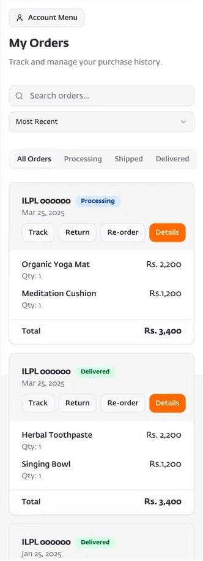
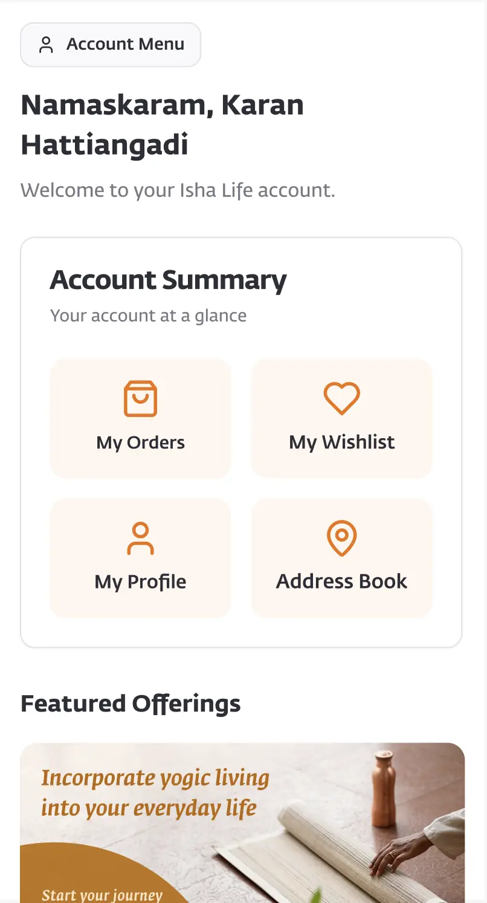
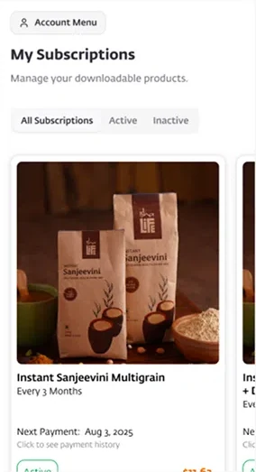

Start with a welcome, not a menu.
The account opens with a personal greeting and an Account Summary: four large shortcuts to orders, wish list, profile and addresses, next to featured offerings and recently viewed products. Every page shares the same frame, a left menu with the current page in the brand orange; on mobile the menu folds into a single Account Menu button, so the content gets the full width.

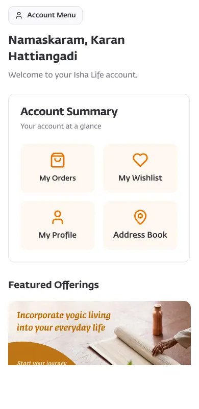
From the list to every detail.
Orders can be searched, sorted and filtered by status, with track, return and re-order on every card. One tap opens the order itself: items with Buy again and Write review, the order summary, shipping address and payment method, an order timeline from placed to shipped, and a direct line to support.
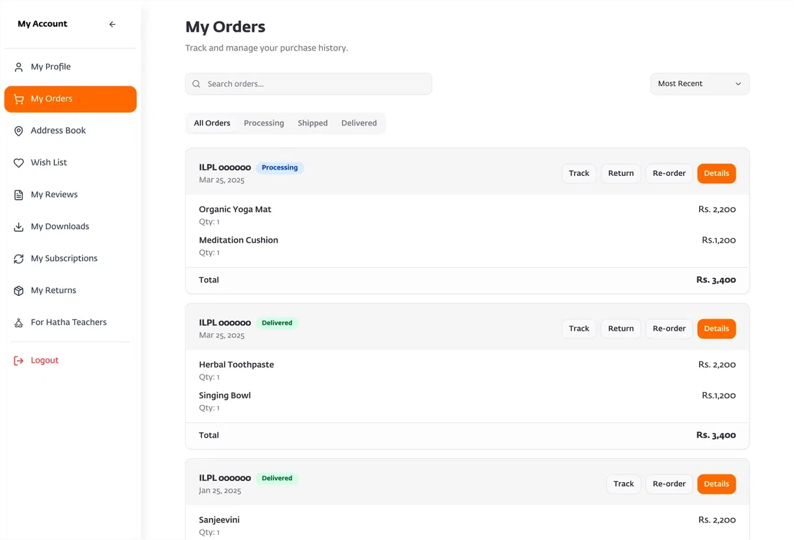
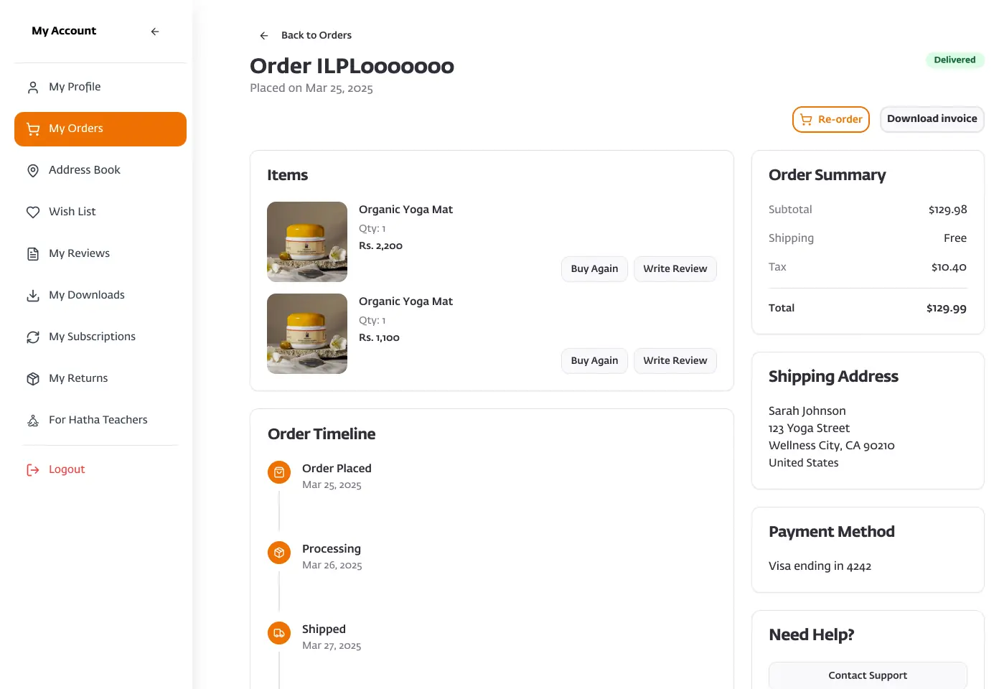
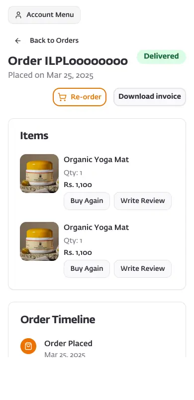
Search, a sort menu and All, Processing, Shipped and Delivered filters sit above the list.
Track, Return, Re-order and Details live on each order card, so nothing needs a second search.
A small coloured status tag next to every order number shows where it is at a glance.
Returns you can follow step by step.
Each return request is a card with its status, the items, the reason and whether it is a refund or an exchange. A five-step tracker shows where it is, from request submitted to return complete, and every request has its own message thread with customer service.

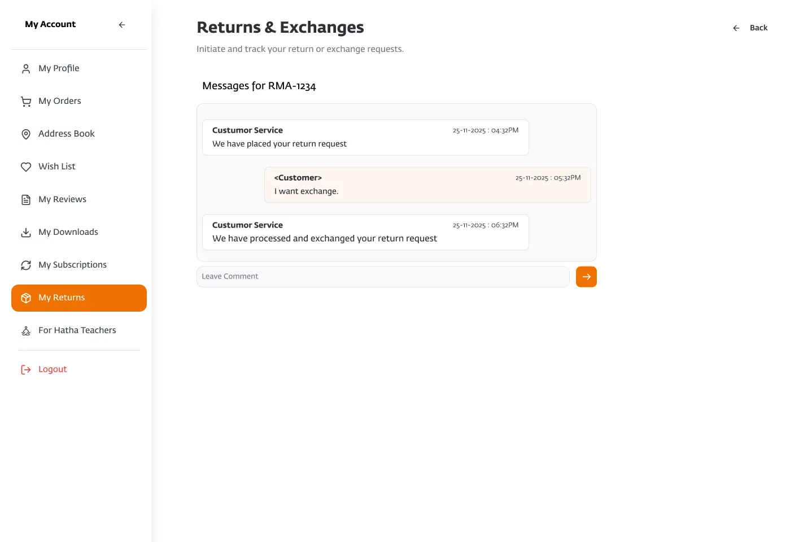
Request submitted, return approved, pickup scheduled, processing and complete, the same five steps on every request.
A tag on each item says which one was asked for, with the reason underneath.
Messages keep the whole exchange with support in one thread per request.
Subscriptions you can read in a second.
Each subscription is a product card: what it is, how often it arrives, the next payment date and the price. Active plans keep their colour photography; inactive plans turn grey and swap the details button for a single orange Re-Start, so the one useful action is the obvious one.

The rest of the account, just as calm.
The same cards, tabs and buttons carry through the wish list with in-stock and out-of-stock filters, reviews sorted by positive, neutral and negative, the profile and security settings, and an address book for shipping and billing addresses with clear defaults.
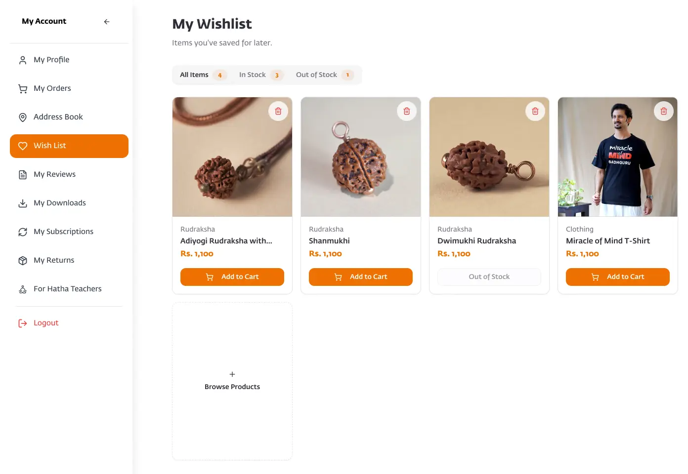
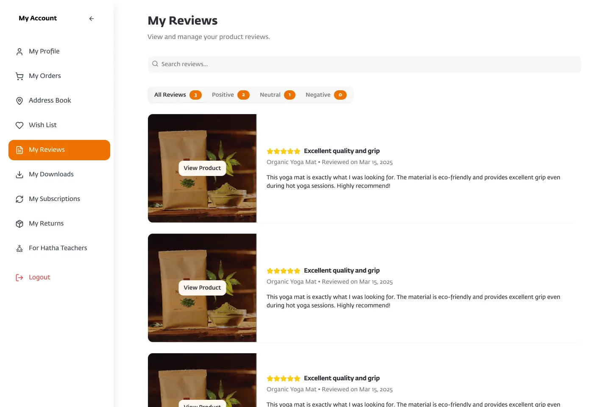
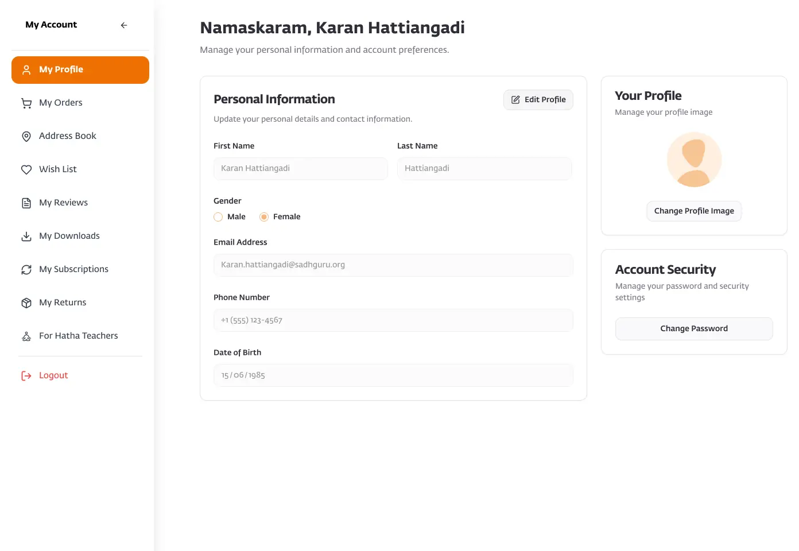
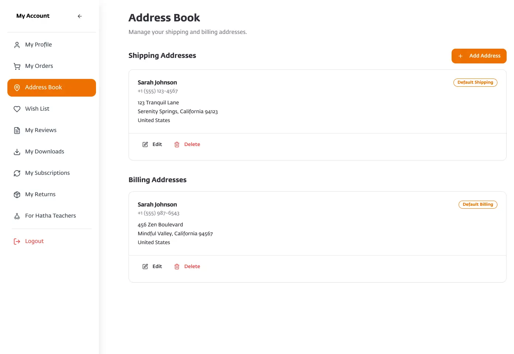
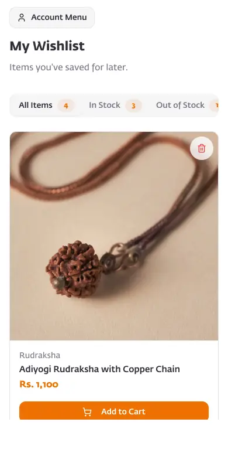
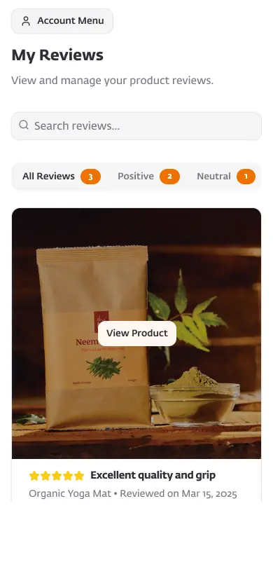
A size guide, built as components.
The size guide is one modal with three tabs: the size table with a CM and IN switch, illustrated How to Measure figures, and an FAQ of collapsible questions. Each part was built as a component, so the same pieces assemble the mobile sheet and the desktop dialog.
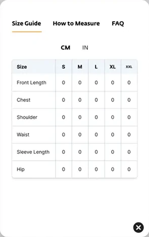


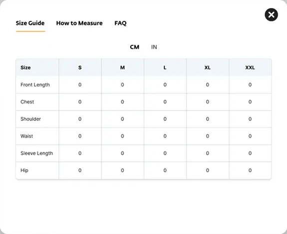
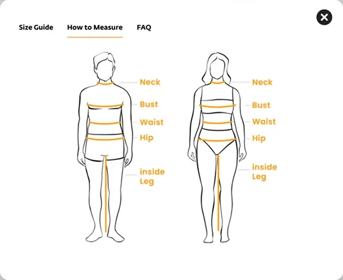
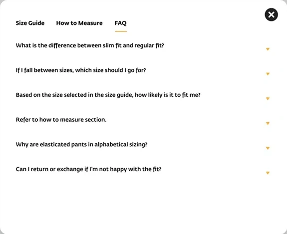
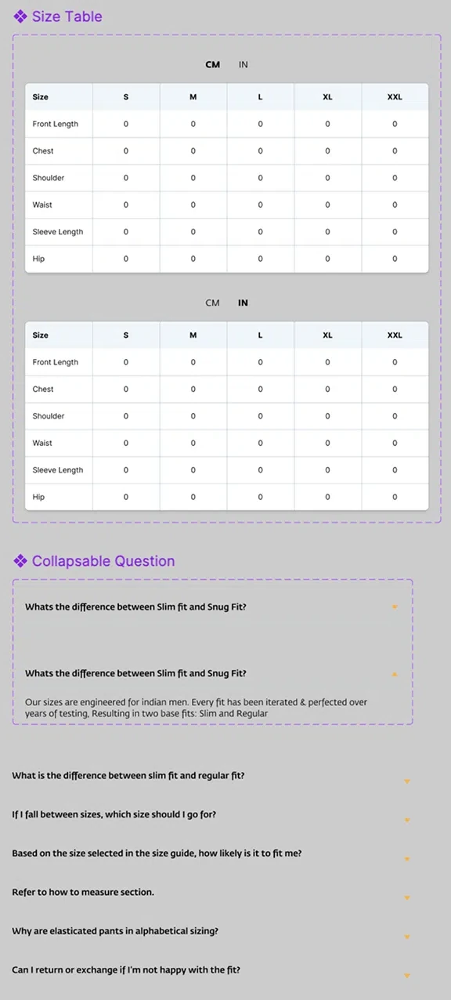
One switch changes every value in the table, instead of two separate charts.
Measuring points are drawn on figures, with labels in the brand orange.
The questions people ask support most often sit inside the guide itself.